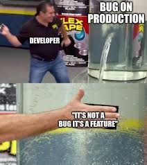
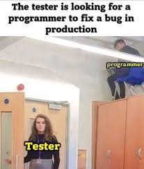
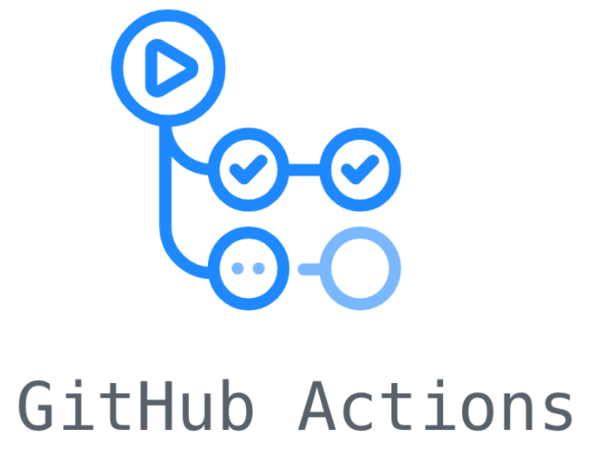

Generación y paso de tests
Introduccion
Contexto
- Producimos código contínuamente.
- Nuestro software (idealmente) se actualiza constantemente.
- El software no solo lo tocamos nosotros, hay más participantes.
Contexto
¿Qué es lo más posible que aparezca?
Tal y como observamos en el Tema 3, los bugs es algo que, seguramente, prolifere en ese ciclo de constante desarrollo de nuestros programas.
¿Conviene detectar bugs en producción?



¿Conviene detectar bugs en producción?
Por lo general, es conveniente evitar encontrar bugs en producción. No es inevitable, pero debemos garantizar, de alguna forma, que los cambios producidos en el software no introduzcan ni nuevos ni más problemas de los que ya hay.
La relevancia del testing
En desarrollo de software es imprescindible contar con un mecanismo de seguridad para detectar y prevenir fallos en las actualizaciones del programa.
A ese mecanismo se le conoce como las pruebas o testing.
La relevancia del testing
Nota
Hoy en día, con el auge del vibe-coding, los tests han ganado muchísima relevancia. Son el mecanismo de control fundamental para detectar bugs derivados de las alucinaciones de los modelos de lenguaje.
Testing
Hablemos de testing
- El testing es el mecanismo por el cual realizaremos pruebas automáticas en los casos donde nuestro programa puede fallar.
- Fundamento principal del Continuous Integration.
Hablemos de testing
Importante
El propósito de los test es que el software falle, no demostrar la ausencia de bugs en el programa.

Hablemos de testing
Comprobar un programa consiste en ver si su comportamiento es correcto para cualquier posible entrada que pueda tener. Dado que esto es imposible, debemos comprobarlo para todas aquellas entradas que tengan una probabilidad razonable de hacer que falle.
Tipos de test
BlackBox testing
- Se implementan sin mirar el código a testear.
- Se basan en las especificaciones funcionales del software.
- Son robustos respecto a cambios en la implementación del código a testear.
- Fundamenta el Test-Driven-Development(TDD).
Tipos de test
WhiteBox testing
- Se tiene acceso al código a testear.
- Complementan a los anteriores y son más fáciles de crear que aquellos.
- Al tener acceso al código debemos fijarnos al construir los tests en las sentencias
if-then-else, bucles,try-catchpresentes en el código a testear.
Granularidad de test
Test unitarios
Prueban una unidad de código aislada.
Granularidad de test
Tests de integración
Prueban la interacción entre múltiples componentes
Granularidad de test
Tests de integración
Prueban la interacción entre múltiples componentes
Granularidad de test
Otros test
- Agotamiento de recursos.
- Rendimiento.
- Usabilidad y accesibilidad.
Cómo testear
Un buen test sigue, por lo general, el principio FIRST.
- Fast: Rápidos de ejecutar
- Independent: No dependen de otros tests
- Repeatable: Mismo resultado siempre
- Self-validating: Pasan o fallan claramente
- Timely: Se escriben junto con el código
Cómo testear
Para ello, cuando diseñemos tests, los enmarcaremos en:
- Tests de regresión: El nuevo código no debe estropear lo que ya funcionaba.
- Tests de datos: Probar con la información que entra.
- Tests de UI: Probar en el interfaz de usuario.
- Tests de tests: ¿Quién dijo que los tests que haces tú están bien hechos?
Anatomía de un test
Un test bien estructurado sigue el patrón AAA:
- Arrange: Preparar el entorno de testing.
- Act: Ejecutar el test.
- Assert: Verificar el resultado de la ejecución.
Anatomía de un test
Los test no se encuentran de forma aislada, normalmente se agrupan en un conjunto.
Ese conjunto se denomina suite de tests.
Anatomía de un test
¿Cómo diseño una suite de tests?
Normalmente, se trata de modularizar las funcionalidades del software. Para cada macro-funcionalidad, tenemos una suite de tests definida
Anatomía de un test
Tip
Normalmente, las suites de tests se modularizan según la estructura del mismo proyecto. Algunas estructuras, como la screaming architecture están pensadas para facilitar la identificación y de suites de test.
Test drivers
Hoy en día los procesos de testeo están automatizados.
Los test drivers se encargan de realizar de todo este proceso. Relegando al programador a implementar las tests suites
Test drivers
Los test drivers:
- Preparan el entorno para invocar el programa o la unidad a testear.
- Incovan el programa o unidad a testear junto a unos datos de entrada.
- Guardan los resultados de la ejecución.
- Comprueban la validez de los resultados.
- Preparan informes automáticos.
Test drivers
Actualmente, existen múltiples herramientas para hacer testing:
C++
- xUnit.
- Boost.Test.
- GLib Test.
Frameworks Web
- Jest.
- Mocha.
- Vitest.
Java
- JUnit.
- TestNG.
- JBehave.
Boost.Test y CTest
Boost.Test framework
Boost.Test es el estándar de facto para hacer testing en aplicaciones de C++.
Ventajas:
- Parte de Boost
- Muy maduro y estable
- Excelente documentación
- Flexible en assertions.
- Output detallado
Características:
- Header-only o compilado
- Múltiples niveles de log
- Filtrado de tests
- Timeout automático
Boost.Test framework
Boost.Test se puede utilizar de tres formas:
- Como librería header-only.
- Como librería de enlace estático.
- Como librería de enlace dinámico.
Tip
Normalmente, se prefiere utilizar la librería con enlace estático o dinámico, ya que es más rápida en ejecución que la librería header-only.
Estructura básica de un test
test/simple_test.cpp
Macros principales de Boost.Test
Existen tres grandes macros en Boost.Test:
BOOST_TESTpara hacer tests habituales.BOOST_REQUIREpara hacer comprobaciones críticas, la ejecución del test para si falla.BOOST_CHECKlo mismo queBOOST_TEST. Es una macro antigua que se ha perpetuado.
Macros principales de Boost.Test
Tip
- Usa
BOOST_TESToBOOST_CHECKpara la mayoría de casos - Usa
BOOST_REQUIREsolo cuando el fallo hace que continuar sea peligroso o sin sentido
Comparaciones
Boost.Test soporta todas las comparaciones:
BOOST_AUTO_TEST_CASE(test_comparaciones) {
int x = 5;
BOOST_TEST(x == 5); // Igualdad
BOOST_TEST(x != 0); // Desigualdad
BOOST_TEST(x > 0); // Mayor que
BOOST_TEST(x >= 5); // Mayor o igual
BOOST_TEST(x < 10); // Menor que
BOOST_TEST(x <= 5); // Menor o igual
}Nota
Funciona igual con las cadenas.
Números de punto flotante
Con float y double NO puedes usar == directamente:
¿Por qué? 0.1 + 0.2 en binario no es exactamente 0.3.
Números de punto flotante
Usa la tolerancia para comparar floats:
Excepciones
A veces quieres que tu código lance una excepción:
Fixtures
Configuración compartida entre múltiples tests:
struct CalculatorFixture {
Calculator calc;
CalculatorFixture() {
// Setup: se ejecuta antes de cada test
std::cout << "Setting up calculator\n";
}
~CalculatorFixture() {
// Teardown: se ejecuta después de cada test
std::cout << "Cleaning up calculator\n";
}
};
BOOST_FIXTURE_TEST_SUITE(calculator_tests, CalculatorFixture)
BOOST_AUTO_TEST_CASE(test_addition) {
BOOST_TEST(calc.add(2, 3) == 5);
}
BOOST_AUTO_TEST_SUITE_END()¿Cómo lanzamos los tests?
Los tests son ejecutables, por lo que deberemos compilarlos como un programa más de c++.
Test Suites
La librería tiene una forma muy elegante de organizar los tests a través de test_suites
Test Suites
Puedes ejecutar solo algunos tests basándote en la jerarquía de tus suites:
Test Suites
Tip
Puedes conocer todas las suites de un módulo a través del argumento --list-content.
CTest
CMake es más que un Meta-Build-System, es un centro de control para todo el proyecto.
Eso incluye también la ejecución de tests.
CTest
CTest es el módulo de control y gestión de tests de CMake.
Tip
CTest viene ya incluido con CMake. No necesitas instalar nada extra.
CTest
Funciones principales:
- Descubre tests automáticamente
- Los ejecuta en orden o paralelo
- Reporta resultados de forma clara
- Integra dashboards (CDash)
- Perfecto para CI/CD
Estructura de un proyecto con tests
my_project/
├── CMakeLists.txt #CMake principal
├── include/
│ └── calculator.hpp
├── src/
│ └── main.cpp
└── tests/
├── CMakeLists.txt #CMake de tests
└── calculator_test.cpp #Tus tests- CMakeLists.txt raíz: Configura el proyecto y habilita testing
- tests/CMakeLists.txt: Define los tests específicos
Configurando CTest
CMakeLists.txt
Importante
enable_testing() es crucial. Sin esta línea, CTest no funcionará.
Configurando CTest
Para configurar adecuadamente CTest se deben seguir los siguientes pasos.
- Crear un ejecutable con los test.
- Registrar el ejecutable con la función
add_test().
Configurando CTest
Para configurar adecuadamente CTest se deben seguir los siguientes pasos.
- Crear un ejecutable con los test.
- Registrar el ejecutable con la función
add_test().
Tip
Debes tener en cuenta que, en realidad, estás compilando un programa aparte (ejecutable) que va a usar tu código para testear. Lo único nuevo es que vas a centralzar el testing a través de CTest.
Configurando CTest
¿Qué hace add_test()?
- Le dice a CTest “este target es un test”
- CTest lo ejecutará cuando hagas
ctest - Captura su código de salida (0 = éxito, ≠0 = fallo)
Configurando CTest
tests/CMakeLists.txt
find_package(Boost 1.71 REQUIRED COMPONENTS unit_test_framework)
add_executable(calculator_test calculator_test.cpp)
target_link_libraries(calculator_test
PRIVATE
Boost::unit_test_framework
)
target_include_directories(calculator_test
PRIVATE
${CMAKE_SOURCE_DIR}/include
)
add_test(NAME CalculatorTest COMMAND calculator_test)Ejecutando tests
Para ejecutar los tests registrados, debes ejecutar en la carpeta build:
Tip
ctest descubre y ejecuta automáticamente todos los tests que registraste con add_test().
Opciones útiles de ctest
ctest --verbose: Ver todo el output detallado.ctest --output-on-failure: Ver el output detallado cuando falla.ctest -R: Ejecutar solo los tests que coinciden con un patrón.ctest -j*: Ejecutar tests en paralelo.ctest --rerun-failed: Reejecutar tests que fallaron.
Propiedades de tests
Puedes configurar comportamiento de tests:
Propiedades de tests
Propiedades útiles:
TIMEOUT: Evita tests colgadosLABELS: Organizar tests por tipoDEPENDS: Un test depende de otroENVIRONMENT: Variables de entorno
Ejecutar por etiquetas
Las etiquetas organizan tus tests:
# Unit tests
add_test(NAME test_math COMMAND math_test)
set_tests_properties(test_math PROPERTIES LABELS "unit")
add_test(NAME test_string COMMAND string_test)
set_tests_properties(test_string PROPERTIES LABELS "unit")
# Integration tests
add_test(NAME test_database COMMAND db_test)
set_tests_properties(test_database PROPERTIES LABELS "integration")Ejecutar por etiquetas
CI
¿Qué es CI?
La Integración Continua (CI) es una práctica de desarrollo que consiste en integrar cambios en el código de forma automática y frecuente.
¿Cómo funciona?
Se fundamenta en la ejecución de tests cada vez que se realiza un cambio en el código del control de versiones.
Nota
En realidad, el CI motiva y da sentido a la aparición y al desarrollo de las estrategias de gestión de ramas que vimos durante el segundo tema.
Beneficios de CI
- Despliegues más seguros
- Incrementa la calidad del software
- Previene errores de integración
- Facilita la colaboración
¿Cómo lo podemos integrar?
Muchos de los servicios de control de versiones ofrecen integración con CI/CD.


También hay otros proveedores como Jenkins o CircleCI.
Integración con GitHub Actions
Al igual que en el CD, debemos de crear un workflow que se ejecute automáticamente cada vez que se va a subir un cambio al repositorio.
Es decir, deberemos ajustar el trigger para que los tests se ejecuten automáticamente.
Integración con GitHub Actions
¿Cuándo se debe ejecutar el CI?
Depende de la estrategia de gestión de ramas que hayas escogido.
Integración con GitHub Actions
- En Git Flow, cuando se suban cambios a la rama principal.
- En GitHub Flow debe activarse para cada pull request que va hacia la rama principal.
- En Trunk-based development es una acción opcional, que se ejecuta cada vez que se integre en una rama.
- En Ship/Show/Ask se ejecuta en las acciones de Show y Ask.
Integración con GitHub Actions
Cuando tengamos un CI estable, conviene activar la protección de la rama principal:
- Settings → Rules → Rulesets → New branch ruleset:
- Target branches → name pattern:
main - Require status checks to pass
- Seleccionar el workflow de tests
- Require branches to be up to date
Ahora no se puede mergear sin que pasen todos los tests.
Integración con GitHub Actions
Tip
También se puede activar la restricción de que solamente se pueda fusionar la rama principal a través de una pull-request, la acción mostrará su resultado al abrirse dicha pull request.
Integración con GitHub Actions
.github/workflows/test.yml
name: C++ Tests
on:
pull_request:
branches: [ master, develop ]
jobs:
test:
runs-on: ubuntu-latest
steps:
- name: Checkout code
uses: actions/checkout@v4
- name: Install dependencies
run: |
sudo apt-get update
sudo apt-get install -y cmake build-essential libboost-test-dev libx11-dev libgl1-mesa-dev xorg-dev
- name: Configure CMake
run: |
cmake -B build -S . -DCMAKE_BUILD_TYPE=Debug
- name: Build
run: |
cmake --build build --config Debug
- name: Run tests with CTest
working-directory: build
run: |
ctest --output-on-failure --verbose
- name: Upload test results
if: always()
uses: actions/upload-artifact@v4
with:
name: test-results
path: build/Testing/Temporary/LastTest.logDesarrollo Colaborativo de Aplicaciones